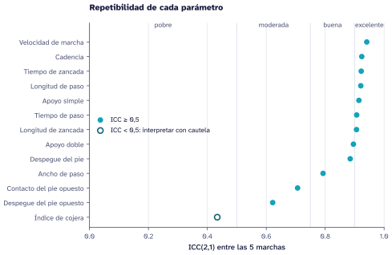
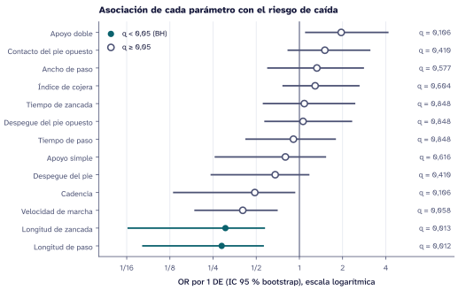

- Estado
- En curso
- Participantes
- 44 registrados, 42 analizables
- Datos
- Captura de movimiento (Vicon), 5 marchas por persona
- Desenlace
- Riesgo de caída derivado del SPPB
- Infraestructura
- Sw
Problema
Las caídas en personas mayores tienen consecuencias graves y se pueden anticipar en parte con pruebas de desempeño físico como la Short Physical Performance Battery (SPPB) (Guralnik et al. 1994). La captura de movimiento mide la marcha con mucho más detalle: velocidad, cadencia, longitudes y tiempos de paso y de zancada, fases de apoyo. La pregunta del proyecto es concreta: ¿qué parámetro de la marcha se asocia más con el riesgo de caída derivado del SPPB?
Es una pregunta de asociación, no de causa ni de diagnóstico. Un parámetro asociado con el riesgo puede ayudar a orientar una evaluación, pero no basta para clasificar a una persona ni dice qué intervenir.
Métodos
Participantes y desenlace
Se registraron 44 participantes. El desenlace binario sale del SPPB: 16 con riesgo, 26 sin riesgo y 2 sin clasificación, que quedan fuera del análisis. La unidad de análisis es el participante: las cinco marchas de cada persona son mediciones repetidas, no observaciones independientes.
Parámetros
Trece familias de parámetros del bloque Gait Cycle Parameters de la exportación de Vicon. Los archivos originales se conservan con su huella SHA-256 y se normalizan con un contrato versionado; los valores faltantes no se imputan.
Análisis
- Repetibilidad: ICC(2,1) de cada parámetro entre las cinco marchas (Shrout y Fleiss 1979), interpretado con los umbrales de Koo y Li (Koo y Li 2016).
- Un valor por participante: el promedio de las cinco marchas, estandarizado (media 0, desviación estándar 1).
- Asociación: regresión logística con la penalización de Firth (Firth 1993; Heinze y Schemper 2002), un parámetro a la vez. Con 42 participantes, la penalización evita estimaciones infinitas cuando un parámetro separa casi por completo los grupos. El efecto se informa como razón de probabilidades (OR) por cada desviación estándar.
- Incertidumbre: intervalo de confianza del 95 % por bootstrap de participantes (2000 remuestreos) y valor p por razón de verosimilitud penalizada.
- Comparaciones múltiples: corrección de Benjamini-Hochberg sobre los 13 parámetros (Benjamini y Hochberg 1995).
El código completo del análisis está en figuras.py, junto a esta página.
Resultados
Datos simulados
El análisis con los datos reales está en curso. Para fijar el flujo antes de mirar los datos reales, aquí se corre completo sobre datos simulados con la misma estructura: 44 participantes, 5 marchas, 13 parámetros y el mismo reparto del desenlace (16, 26 y 2). Ningún número de esta sección describe a los participantes del estudio.
Repetibilidad

La mayoría de los parámetros simulados tiene una repetibilidad buena o excelente. El índice de cojera queda por debajo de 0,5: su asociación con el desenlace se interpreta con cautela, porque buena parte de su variación es ruido entre marchas.
Asociación con el riesgo de caída

| Parámetro | ICC(2,1) | OR por 1 DE | IC 95 % | p | q (BH) |
|---|---|---|---|---|---|
| Longitud de paso | 0,92 | 0,29 | 0,08 a 0,57 | 0,001 | 0,012 |
| Longitud de zancada | 0,91 | 0,30 | 0,06 a 0,58 | 0,002 | 0,013 |
| Velocidad de marcha | 0,94 | 0,40 | 0,19 a 0,71 | 0,013 | 0,058 |
| Cadencia | 0,92 | 0,49 | 0,13 a 0,94 | 0,035 | 0,106 |
| Apoyo doble | 0,90 | 1,96 | 1,10 a 4,18 | 0,041 | 0,106 |
| Despegue del pie | 0,88 | 0,68 | 0,24 a 1,17 | 0,221 | 0,410 |
| Contacto del pie opuesto | 0,71 | 1,51 | 0,83 a 3,13 | 0,191 | 0,410 |
| Ancho de paso | 0,79 | 1,32 | 0,60 a 2,82 | 0,355 | 0,577 |
| Índice de cojera | 0,43 | 1,29 | 0,76 a 2,63 | 0,418 | 0,604 |
| Apoyo simple | 0,91 | 0,80 | 0,26 a 1,54 | 0,474 | 0,616 |
| Tiempo de zancada | 0,92 | 1,08 | 0,56 a 2,45 | 0,798 | 0,848 |
| Tiempo de paso | 0,91 | 0,91 | 0,42 a 1,80 | 0,756 | 0,848 |
| Despegue del pie opuesto | 0,62 | 1,06 | 0,57 a 2,33 | 0,848 | 0,848 |
En la simulación, solo la longitud de paso y la de zancada mantienen un q menor que 0,05 después de la corrección: una zancada más larga se asocia con menos probabilidad de riesgo. La velocidad de marcha queda cerca del umbral. Con los datos reales, la Tabla 1 y las dos figuras se regeneran sin cambiar nada más que la fuente de los datos.